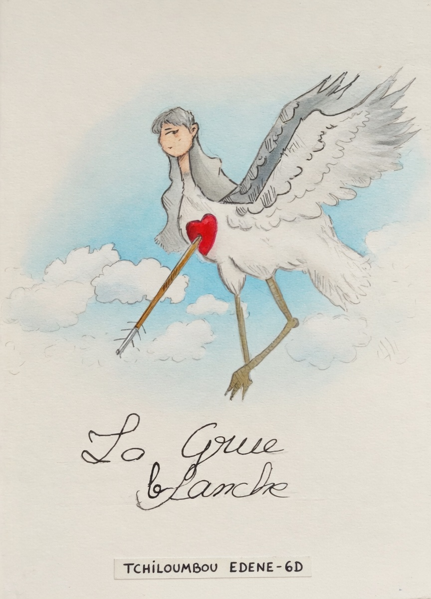
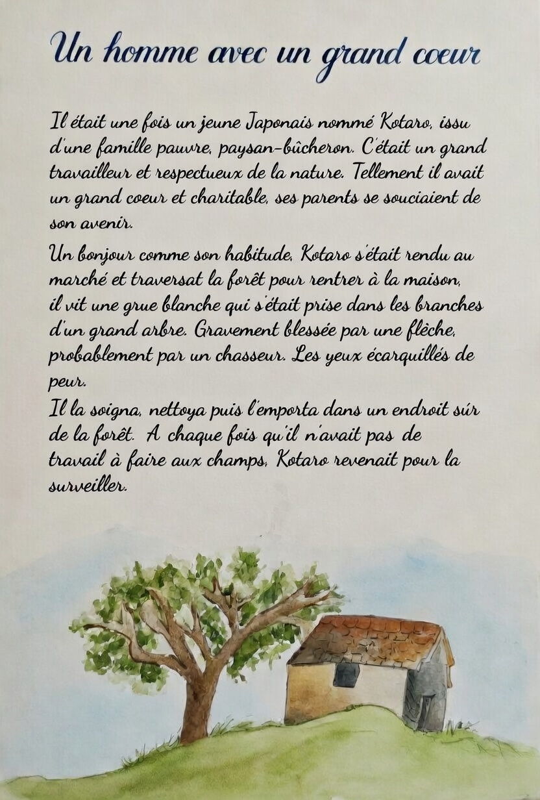
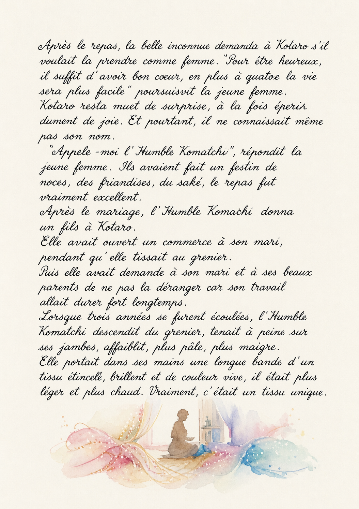
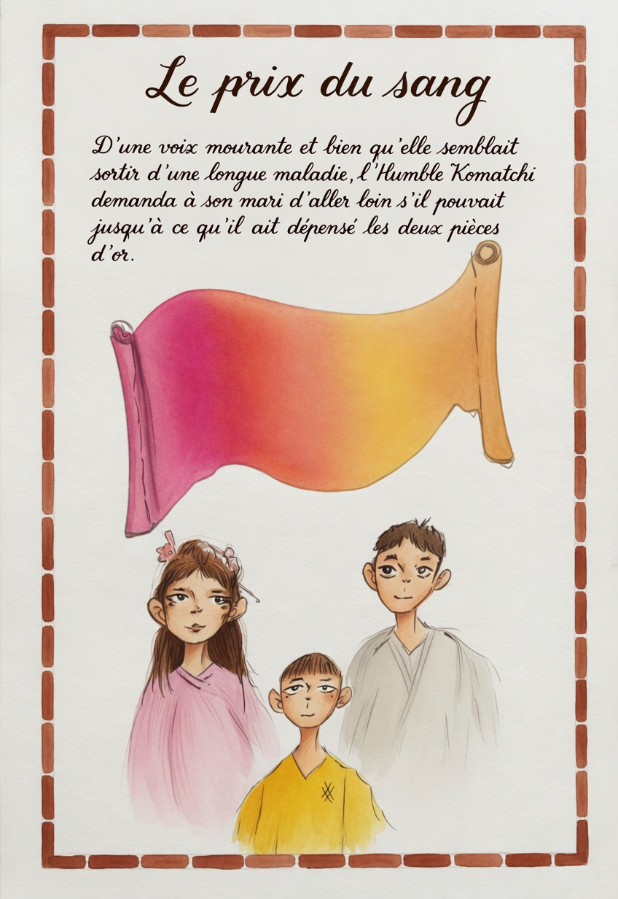
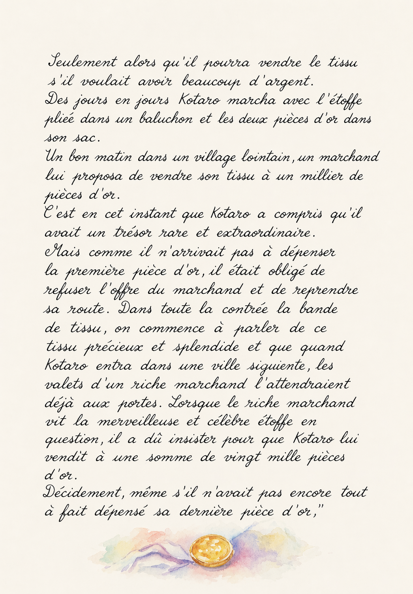
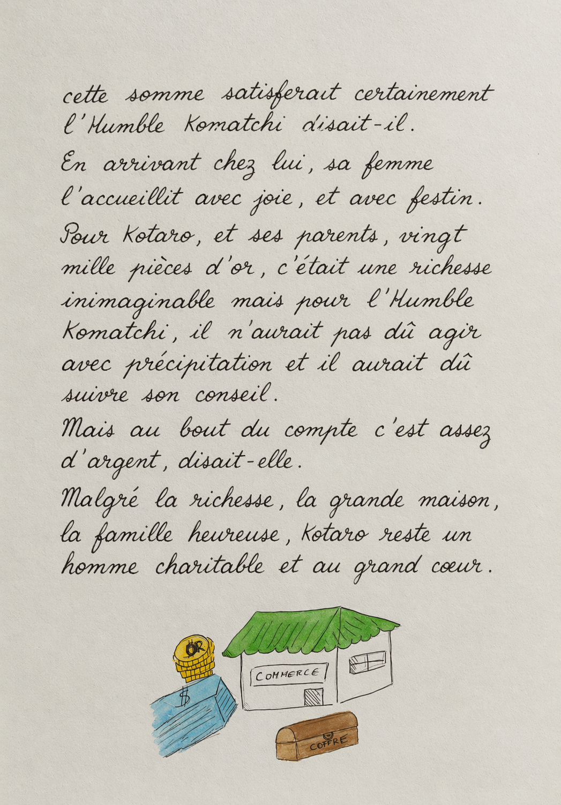
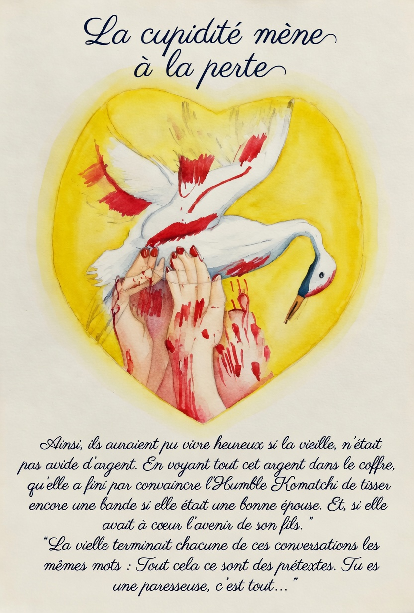
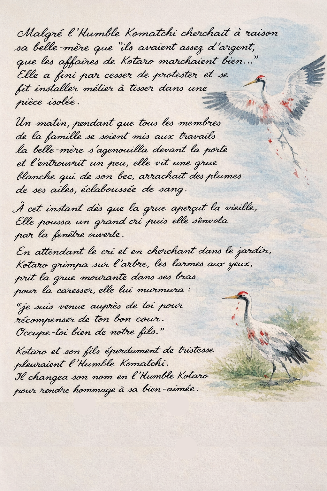
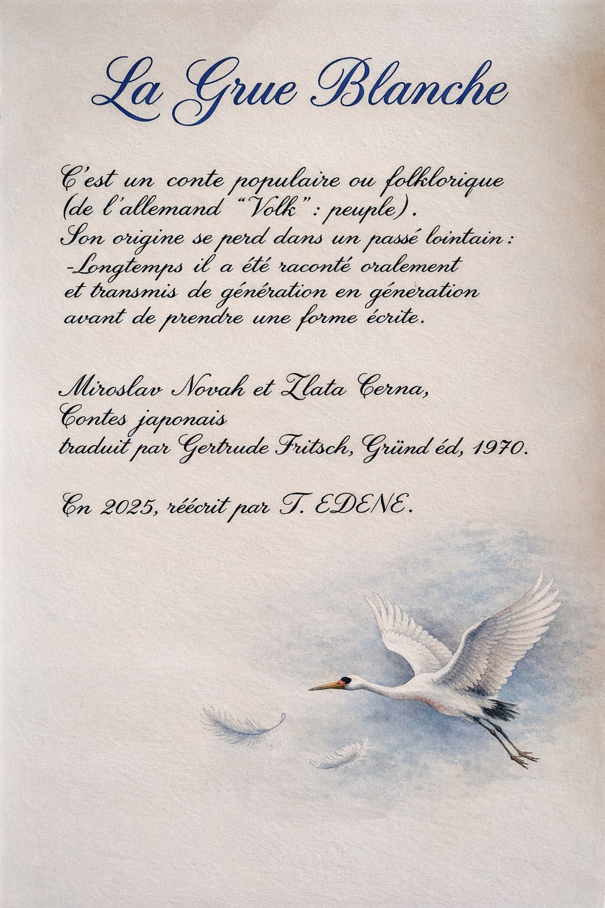
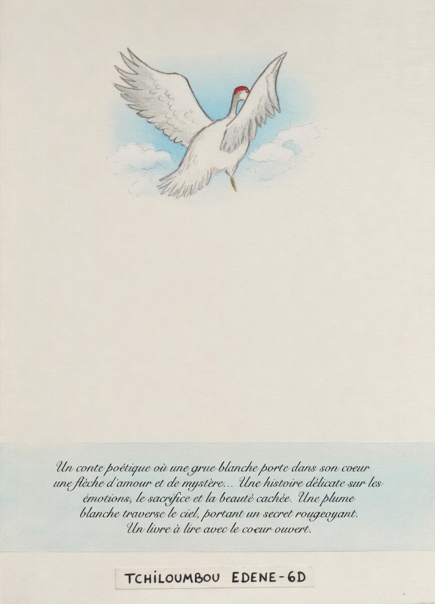

EXPÉRIENCE INTERACTIVE
La Grue blanche









Balayez ou utilisez les flèches pour tourner les pages.
EXPÉRIENCE INTERACTIVE










Balayez ou utilisez les flèches pour tourner les pages.